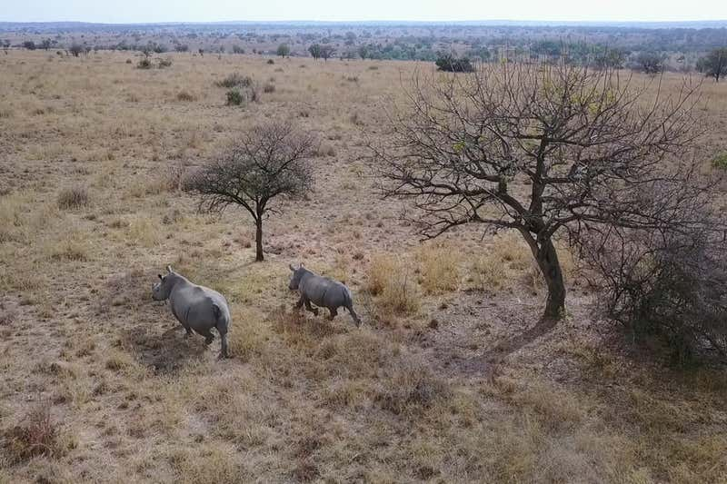
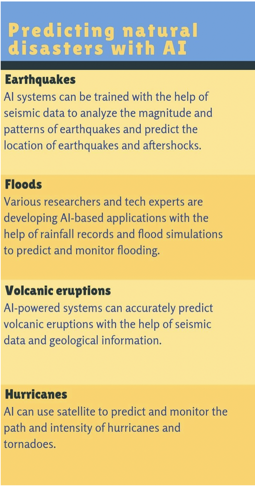

Computer science has many positive contributions to society. One of which is the environment benefits. Computer science is constantly in the media for it's help with environmental problems.
Here are a few examples of recent stories in the news:
Drones could be used to herd rhinos away from poaching hotspots
Drones and sirens could help to combat the poaching of southern white rhinos. The technology can deter the animals from entering areas of national parks and reserves where the poaching risk is high.
Thanks to conservation efforts, the number of southern white rhinos has increased dramatically since the early 1900s and now sits at around 20,000 individuals. Unfortunately, this has been followed by an uptick in poaching, and more than 1000 African rhinos were killed by poachers each year between 2013 and 2017.
Efforts to combat poaching have traditionally relied on expensive options such as vehicle and foot patrols, which put a financial strain on the reserves and parks that are home to rhinos. Visit their website to read more

Using AI to predict natural disasters
Artificial intelligence has been helping us in various applications such as customer service, trading and healthcare. And now, researchers have found that AI can be used to predict natural disasters. With enormous amounts of good quality datasets, AI can predict the number of numerous natural disasters, which can be the difference between life and death for thousands of people. Some of the natural disasters that can be predicted by AI are:
